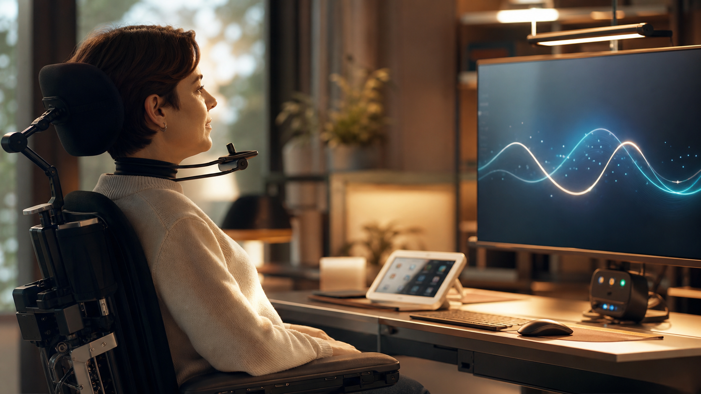
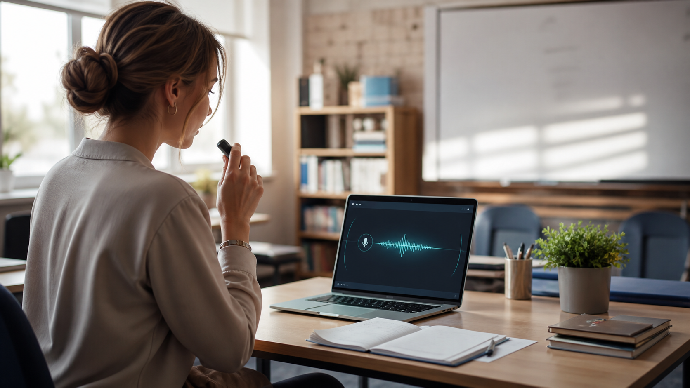

Autonomie
Quand les mains ne suivent plus.
La voix devient un vrai moyen d'agir.
Voxirys aide à travailler quand le clavier fatigue, quand le temps manque, ou quand la voix va plus vite que les mains.

La voix devient un vrai moyen d'agir.

Notes, cours, corrections, comptes rendus.
Gagner du temps entre deux tâches.
Voxirys doit disparaître derrière l'usage : vous parlez, l'ordinateur répond, le travail avance.

Pas besoin de retenir une interface compliquée. Voxirys transforme les demandes simples en actions utiles.
Le bon assistant vocal ne se remarque presque plus.
Il rend l'ordinateur plus accessible, plus rapide, plus humain.Réduire les gestes inutiles.
Aller plus vite dans les tâches répétées.
Voir ce que Voxirys fait.
Garder sa voix chez soi.
Une voix. Un ordinateur. Plus d'autonomie. Version bêta.
Télécharger la bêta